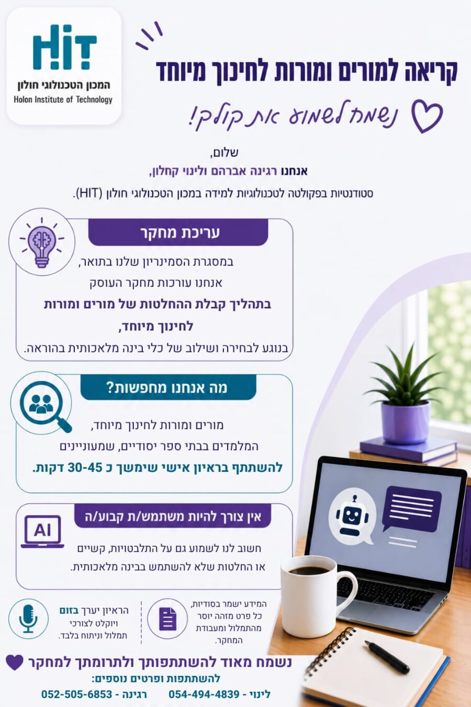

למי? כיצד? באילו תנאים?
מחקר איכותני על תהליך קבלת ההחלטות של אנשי חינוך מיוחד בבחירת כלי בינה מלאכותית יוצרת (GenAI) ובשילובם בהוראה. הוגש כמועמד לכנס צ'ייס לחקר חדשנות וטכנולוגיות למידה.
- מחברות
- לינוי קחלון, רגינה אברהם
- משתתפים
- 15 אנשי חינוך מהחינוך המיוחד
- שיטה
- ראיונות עומק חצי-מובנים, ניתוח תמטי
- מסגרת
- סמינריון, HIT

למה הנושא הזה
התבקשנו לבחור נושא שמחבר בין למידה לטכנולוגיה. בחרנו בכוונה בתחום שעוד לא נחקר מספיק: איך מורות לחינוך מיוחד מחליטות אם להשתמש ב-AI, ואיך.
בחרנו גם בגישה איכותנית לחלוטין, והיינו הקבוצה היחידה בכיתה שעשתה זאת. רצינו לראות מעבר למספרים. לא עוד שאלון של כן ולא או דירוג מ-1 עד 5, אלא לשמוע את האנשים עצמם: איך הם חושבים, ממה הם חוששים ומה חשוב להם.
החלק שלי
- גיוס המשתתפים: איתור ופנייה לאנשי חינוך שמתאימים לקריטריונים, דרך קשרים מקצועיים, קבוצות של אנשי חינוך והפניות. כל זה במהלך שירות מילואים פעיל.
- ראיונות: עריכת ראיונות עומק חצי-מובנים עם אנשי החינוך.
- ניתוח הראיונות: ניתוח תמטי של הראיונות וזיהוי הנושאים המרכזיים שעלו בהם.
- כתיבה: פרקי העבודה, מסקירת הספרות והמתודולוגיה ועד כתיבת הממצאים, הדיון והמסקנות.
ממצאים עיקריים
מה ה-AI נותן
יצירה והתאמה של חומרי הוראה, מענה לרמות לימוד שונות, חיבור לתחומי העניין של התלמיד, הנגשת תכנים והפחתת עומס.
מה מקשה
תוצרים לא מדויקים או לא מתאימים, צורך בניסוח חוזר של ההנחיות, תשתיות חסרות ופערים בהכשרה.
מה מכריע
מעבר לתועלת: הצרכים של כל תלמיד, פרטיות, חשיבה עצמאית, תקשורת בין-אישית והקול האישי של המורה.
השילוב מתואר כתהליך מתמשך של בחינה והתאמה, ולא כהחלטה חד-פעמית לאמץ או לדחות טכנולוגיה.
מה לקחתי מזה
בחינוך המיוחד, כלי יעיל אינו בהכרח כלי מתאים.
המחקר מחזק עיקרון שמלווה את העבודה שלי: לפני שבוחרים טכנולוגיה, צריך להבין את הלומד הספציפי ואת מי שילמד איתה.
פלייר הגיוס

Abstract
This study examined how special education professionals describe their decisions about selecting and integrating generative AI into teaching. Using semi-structured interviews with 15 educators and inductive thematic analysis, it found that decisions extend beyond perceived usefulness and ease of use, to individual student needs, privacy, independent thinking and the teacher's personal voice.